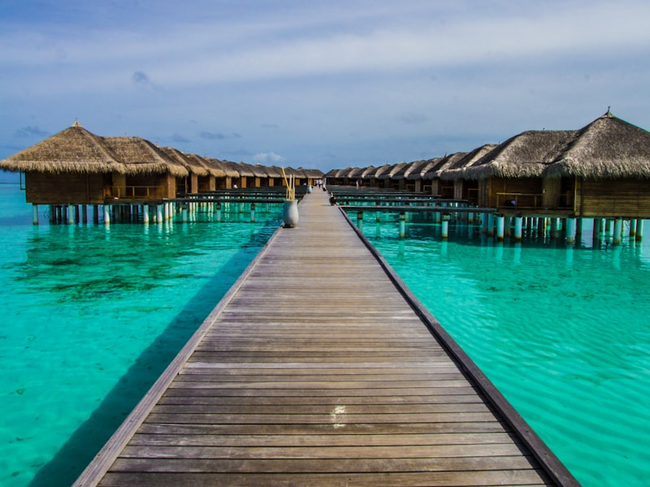
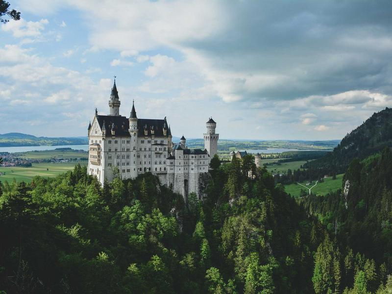
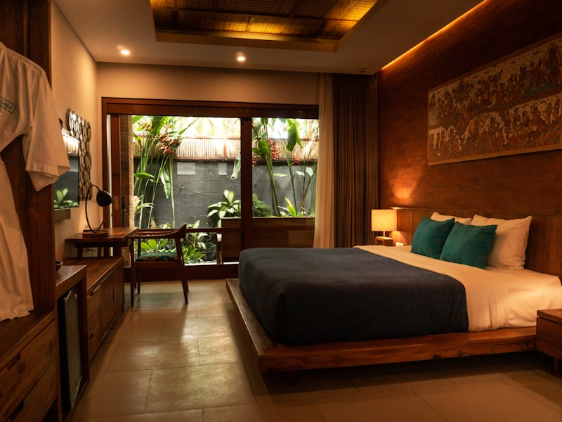

🌍 TOP SECRET: DOSSIER OPERATION MALINSKA 🌍
Mission Facts
- Zielort: Malinska, Insel Krk, Kroatien 🇭🇷
- Datum: 7. - 9. August 2026 📅
- Mission: Legends Only.
- Klassifizierung: STRENG GEHEIM 🤫
- Währung: Kroatien hat den Euro (€). Wir brauchen also nicht mehr umrechnen. 💶
- Goldene Regel: Was in Malinska passiert, bleibt in Malinska. 🤐


🏨 BASISLAGER: HOTEL MALIN
Das Hotel Malin ist unser Headquarter für dieses Wochenende. Es liegt direkt am Meer und bietet den perfekten Mix aus Entspannung nach einer langen Nacht und strategischer Lage.
- Adresse: Kralja Tomislava 23, 51511 Malinska, Kroatien 📍
- Lage: Direkt am Strand, nur wenige Gehminuten vom Zentrum von Malinska entfernt. 🌊
- Ausstattung: Eigener Strandabschnitt (Mulino Beach), Spa & Wellness, und hervorragendes Frühstücksbuffet. Inkludiert sind außerdem Badetaschen mit Handtuch, Bademantel und Slipper. 🍳👜
- Buchung & Zimmer: Wir haben 2 Nächte für 5 Personen reserviert.
- Zimmer 1: Superior Doppelzimmer mit Balkon (für 2 Personen).
- Zimmer 2: Familienzimmer Atrium (für 3 Personen).
- Zahlungs-Facts: Die Buchung ist bereits bezahlt (€ 1,368). Vor Ort sind noch € 20 City Tax (€ 2 p.P./Nacht) fällig. Ein Damage Deposit von € 500 per Kreditkarte wird beim Check-in fällig (gibt's beim Check-out zurück, sofern wir das Hotel nicht abreißen). 💳
- Vibe: Premium. Wir residieren mit Stil. 😎



🗺️ KARTEN & NAVIGATION
🚗 Die Anreise & Boxenstopps
- Route: Graz -> Maribor -> Zagreb -> Rijeka -> Krk Brücke -> Malinska
- Fahrzeit: Ca. 3,5 - 4 Stunden (ohne Stau).
- Boxenstopp-Empfehlungen:
- Raststation Tepanje (Slowenien): Kurz nach der Grenze, gut für einen ersten schnellen Kaffee. ☕
- Vrata Jadrana (Kroatien): Kurz vor Rijeka, herrliche Aussicht aufs Meer und perfekt für die letzte Pause vor der Brücke. ⛽🚽
📍 Points of Interest (Malinska)
🏃♂️ SPORT & AKTIVITÄTEN
- Laufstrecke (Morning Run): Die "Rajska Cesta" (Paradiesweg) führt direkt vom Hotel am Meer entlang bis nach Njivice. Wunderschöner, flacher Weg durch den Pinienwald. Perfekt für einen 5-10km Run am Morgen. 🌲👟
- Wassersport: Am Strand beim Hotel gibt es Stand-Up-Paddle-Boards (SUP), Jet-Ski und Kajaks zum Ausleihen. 🏄♂️
- Schwimmen: Das Meer direkt vor der Tür – ideal für ein schnelles Workout. 🏊♂️
🪩 NACHTLEBEN: DIAMOND CLUB KRK
Das ist der Hauptgrund für unsere verdeckte Operation. Der Diamond Club lässt Lignano und Jesolo tatsächlich wie einen Kindergeburtstag aussehen.
- Der Club: Ein gigantisches Open-Air-Amphitheater in die Natur gebaut. ✨
- Stage: Die größte Bühne der Adria (25m breit, 9m hoch). 🤯
- Sound & Visuals: State-of-the-Art Soundsystem und Laser-Shows, die das Trommelfell massieren. 🔊
- Vibe: Ibiza 2.0. VIP-Feeling garantiert. 💎
- Tipp: Sonnenbrille für den Sonnenaufgang nicht vergessen! 🕶️

🥩 VERPFLEGUNG: RESTAURANTS & BARS
- Konoba Bracera: Rustikal, authentisch. Perfekt für das erste Abendessen. Hervorragendes lokales Fleisch und Fisch. 🍖🍤
- Restaurant Mulino: Direkt beim Hotel am Strand. Gehobene Küche, super für einen entspannten Lunch am Meer. 🍷
- Primorska Koliba: Bekannt für frischen Fisch und kroatische Spezialitäten direkt an der Promenade. 🐟
- King's Caffe: Guter Kaffee und entspannte Bar für den Nachmittag oder das erste Konterbier. 🍻
🏛️ KULTUR & SIGHTSEEING
Wir sind zwar nicht auf Kulturreise, aber ein paar Alibi-Fakten schaden nie. Hier ein paar besondere Spots, falls uns langweilig wird:
- Haludovo Palace Hotel (Lost Place): Ein riesiges, völlig verlassenes Luxushotel aus den 70ern, direkt in Malinska. Früher feierte hier die Elite Jugoslawiens, heute holt sich die Natur den Beton zurück. Es ist ein faszinierender, fast postapokalyptischer Ort. Perfekt für einzigartige, leicht gruselige Urlaubsfotos. 📸
- Die Stadt Krk: Nur etwa 15 Minuten Fahrt entfernt liegt die historische Hauptstadt der Insel. Sie wird von einer massiven alten Festungsmauer, der Frankopanenburg, umschlossen. Man kann durch die engen, gepflasterten Gassen schlendern und in kleinen Cafés am Hafen sitzen. Ein cooler Kontrast zum Party-Vibe. 🏰
- Vrbnik: Ein winziges Dorf, das dramatisch auf einer steilen Klippe direkt über dem Meer thront. Es ist die Heimat des berühmten Žlahtina-Weins, der nur hier wächst. Außerdem gibt es hier angeblich eine der engsten Gassen der Welt. Sehr fotogen und super für eine Weinprobe. 🍷